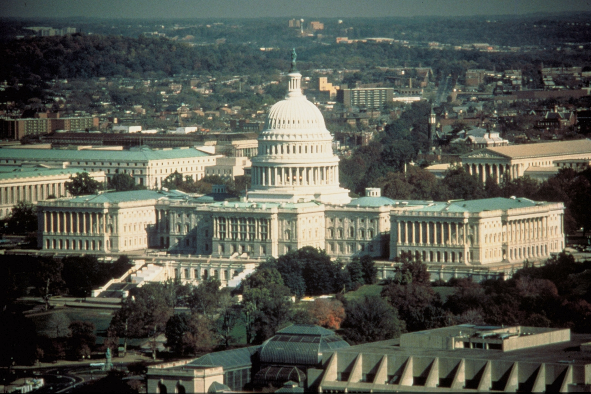
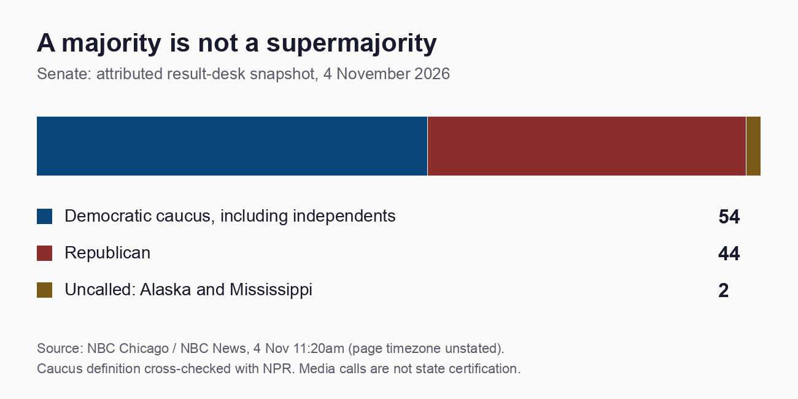
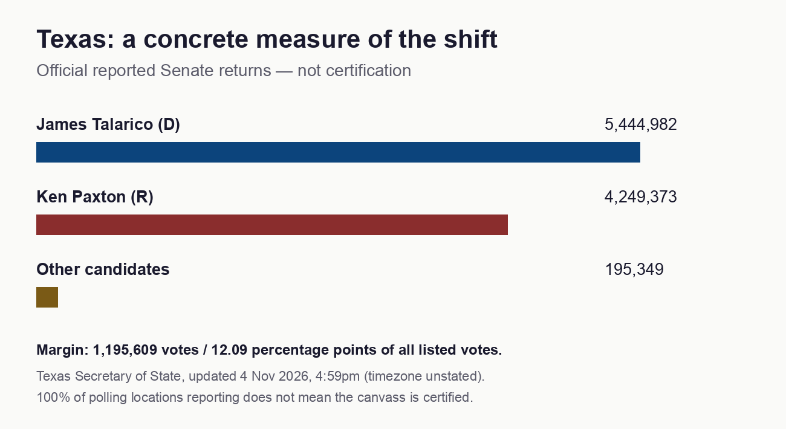

What the 2026 midterms change — and what comes next
5 November 2026 · Results snapshot from 4 November
America has delivered a congressional rebuke to Donald Trump. Democrats have won control of the incoming House and Senate, according to election reporting. The consequential question is what they can do with that power: investigate an administration, negotiate spending, challenge appointments and force choices that will shape the contest for 2028. The presidency remains in Republican hands. From January, divided government will change the coalitions needed to legislate and fund policy, including wars whose participants have interests of their own. Election results, ABC/AP

1. The result that changes the map
The most striking signal is the breadth of the reported Senate gains: North Carolina, South Carolina, Texas, Ohio, Kansas, Iowa and Maine. These results challenge assumptions about which states are beyond either party’s reach. They do not establish that those states have permanently changed political identity. Candidates, turnout and the circumstances of a particular election still matter. ABC/AP results
The snapshot used here is NBC’s 4 November update: a Democratic caucus of 54, including independents; 44 Republicans; and Alaska and Mississippi uncalled. Its House figure of 258–177 was a projection, not a completed count. Keeping those categories separate matters when judging the size of a mandate. NBC results update, NPR caucus definition

| Senate snapshot | Seats |
|---|---|
| Democratic caucus, including independents | 54 |
| Republican | 44 |
| Uncalled: Alaska and Mississippi | 2 |
Texas supplies a particularly clear example. Its official return, updated on 4 November, listed 5,444,982 votes for James Talarico and 4,249,373 for Ken Paxton. Across all listed candidates, that is a margin of approximately 12.09 percentage points. A state reporting every polling location is still distinct from a certified result. Texas Secretary of State

| Texas Senate candidate | Votes listed |
|---|---|
| James Talarico | 5,444,982 |
| Ken Paxton | 4,249,373 |
| Ted Brown | 190,237 |
| Avery Ayers | 1,925 |
| Jade Simmons | 1,738 |
| Bradford Brad Hall | 1,263 |
| Zul Mohamed | 186 |
2. Winning Congress is the beginning of a negotiation
The ordinary congressional transition occurs at noon on 3 January 2027. Until then, the outgoing Congress remains consequential. After that transition, committee leadership, scheduling and appropriations give the new majorities substantial tools. Their effectiveness depends on caucus unity, cooperation between chambers, enforcement and the president’s response. Twentieth Amendment, Congressional oversight manual
The numbers are different for different powers:
| Action | Governing threshold |
|---|---|
| House impeachment | Simple majority voting, with a quorum |
| Senate conviction | Two-thirds of senators present |
| Override a presidential veto | Two-thirds voting in each chamber, with a quorum |
| End debate on most ordinary Senate legislation | Three-fifths of senators duly chosen and sworn, normally 60 |
With all 100 senators present, conviction requires 67 votes. If all 435 House members and all 100 senators cast votes, an override requires 290 House votes and 67 Senate votes. Those are examples using full attendance, not interchangeable constitutional constants. Cloture ends debate; it is not the threshold for every final vote. Senate impeachment, CRS veto guide, Senate voting
Budget reconciliation can provide a majority route for qualifying budget legislation, subject to restrictions including the Byrd rule. Nomination procedures also differ from ordinary legislation. Neither exception turns a 54-seat caucus into an unrestricted lawmaking majority. Congress can shape the terms of negotiation; the president retains a veto. CRS reconciliation guide, CRS nomination procedures
Consider an ordinary bill backed by all 54 members of that caucus. Under the usual 60-vote cloture requirement, it would still need six additional votes to end debate. If it then passed both chambers and faced a veto, the override calculation would be different again. Conversely, blocking a nomination or declining to advance a spending proposal can require a different coalition from enacting a replacement policy. The political significance of the victory lies in gaining these points of decision, even when the majority cannot dictate the final settlement.
3. Enquiries, impeachment and the legitimacy test
Hakeem Jeffries’s announced candidacy for Speaker set out affordability and accountability among his priorities. Reporting also describes Democratic plans for extensive investigations of the administration. These are statements of intent. A leadership candidacy is not an election to office; announced plans do not establish that a committee has opened an enquiry, and an enquiry does not establish misconduct. Jeffries’s announcement, NPR on investigation plans
NPR identifies prospective scrutiny of the administration’s handling of Epstein records, presidential business interests, immigration enforcement, public health, Iran-war costs and federal contracts involving Elon Musk’s companies. These are reported priorities for scrutiny, not established findings against the people named. Their significance will depend on the records obtained and the procedures used. NPR investigation agenda
An important test will be whether committees obtain records that explain official decisions and any connection to private interests: contracts, communications, financial interests and the reasons officials gave for acting. Oversight also addresses lawful administration and policy performance. Subpoenas create legal demands, but privilege disputes, negotiations and litigation can delay disclosure. Hearings can expose facts without producing a conviction; criminal liability involves a separate process. Congressional oversight manual
Impeachment is therefore a possible instrument, not the automatic destination of a congressional victory. Its political force depends partly on the quality of evidence and the fairness of procedure. The same standards should apply to wealthy donors, presidential allies and opposition figures. Treating an allegation as a verdict would weaken the credibility that makes oversight effective.
For audiences following a major enquiry, three questions are more useful than the volume of accusation: what conduct is being examined, what records substantiate it, and what legal or ethical standard applies? A financial connection may justify closer scrutiny without proving a prohibited exchange. A failure to establish criminal wrongdoing also need not settle a separate question about conflicts of interest or poor administration. Keeping those tests distinct allows scrutiny to be demanding and fair at the same time.
4. What the money can actually tell us
Campaign finance offers evidence of scale and funding flows. It cannot, by itself, tell us how many votes a donor purchased or prove that an official decision was corrupt. The FEC’s October statistical release covered only January 2025 through June 2026. Calling it the final cost of the election would misdescribe the period. Candidate, party and political-action-committee totals also contain flows that should not simply be added together. FEC statistical summary
One concrete example is America PAC. Its FEC profile for the period ending 14 October showed approximately $171.7 million in disbursements, including approximately $51.4 million in independent expenditures. The latter belongs within the former; it is not another amount to add. A committee’s spending is also distinct from any single billionaire’s personal contributions. America PAC filings, FEC expenditure guidance
The next useful accounting checkpoint is the post-general report: coverage through 23 November, due on 3 December. For 2028, donors may assess candidate recruitment, voter mobilisation and issue positioning alongside wins and losses. Analysts should compare those investments with credible alternatives before claiming a return. A heavily financed defeat demonstrates that money does not guarantee victory; it does not show that spending had no effect. FEC reporting calendar
5. Gerrymandering and the voters behind the colours
District boundaries can change how House votes become seats. They cannot explain a statewide Senate result through congressional district lines. A convincing claim about how many House seats a map produced requires a defensible alternative map and a consistent electoral comparison. This report does not assign a national seat bonus without that calculation.
The legal landscape has changed. In April’s Louisiana v. Callais decision, the Supreme Court held Louisiana’s challenged map to be an unconstitutional racial gerrymander and concluded that Section 2 did not require the additional majority-minority district at issue. That ruling does not mean every majority-minority district is unlawful. Separately, Rucho placed federal partisan-gerrymandering claims beyond federal judicial resolution; state constitutional and political routes remain distinct. Callais decision, Rucho decision
Population growth also needs careful translation. The Census Bureau reported that the five fastest-growing cities and towns with at least 20,000 residents in its Vintage 2025 release were in Texas, measured from July 2024 to July 2025. Residents are not the same as eligible, registered or participating voters. Suburban growth can alter political competition, but housing costs, age, citizenship, turnout and candidate appeal mediate its effect. Comparisons of voter groups across elections cannot automatically establish that the same individuals switched parties. Census population estimates, AP electorate-survey methodology
6. The struggle to inherit 2028
For Republican successors, a central strategic question is how to retain MAGA support while reaching a broader electorate. They face a choice: defend Trump’s record, change the party’s presentation, or challenge elements of its programme. Those approaches can compete within the same politician. A successor needs primary voters and a wider electorate, creating incentives to signal continuity on identity while promising changes on costs or war.
Democrats face the opposite temptation: to treat rejection of an incumbent as endorsement of every opposition policy. Their coalition must decide what affordability, accountability and international restraint mean in actual legislation. Reported discussion of Kamala Harris, Gavin Newsom, Josh Shapiro and other prospects is positioning, not nomination. JD Vance’s prominence likewise does not settle the Republican contest. AP on the opening 2028 contest
The electoral machinery matters too. The 2028 Electoral College allocation remains based on the 2020 Census: 538 votes, with 270 required for a majority. Population developments now may change voting within states, but the next census does not reallocate the 2028 contest. Congressional gains are useful signals for recruitment and coalition building; presidential turnout and the Electoral College create a different competition. National Archives allocation
7. Backlash without assuming breakdown
Political anger can produce lawful protest, litigation, organising, intimidation or violence. Those are different behaviours, with different evidence and responses. The FBI’s October warning concerning threats to election workers establishes a specific security concern. It does not establish that a nationwide civil conflict is imminent. FBI public-service announcement
The constructive test for the next two years is whether institutions can process disagreement without removing opponents’ political rights. Congress needs visible scrutiny of executive action; the administration and its supporters retain rights of reply and lawful opposition. Investigations that become collective punishment would damage that settlement. So would attempts by executive officials to obstruct Congress’s lawful exercise of its constitutional powers.
Watch conduct rather than temperature: acceptance of lawful results, protection of election workers, compliance with court orders and whether officials distinguish peaceful protest from criminal acts. An atmosphere of hostility is serious, but the route from hostility to organised violence must be demonstrated rather than assumed.
8. Iran, Israel and the limits of presidential command
The Middle East is an important test of the new balance. Reuters reported continuing distance between US and Iranian positions despite mediation, alongside recent military activity and Trump’s stated willingness to wait for an agreement. It also reported an announcement concerning future US support for Israel. An announcement does not establish that Congress has changed an appropriation or that assistance has already stopped. Reuters on US–Iran negotiations
Trump remains commander-in-chief. That authority operates alongside Congress’s powers over legislation and funding. The War Powers Resolution contains notification and withdrawal provisions, including a qualified 60-day period; it is not blanket permission for any war lasting less than 60 days. The legal position depends on the operation, its authorisation and the relevant circumstances. Constitution, CRS War Powers Resolution
The strategic problem is commitment. A potential bargain would require Washington and Tehran to trust that reciprocal steps will endure. Israel’s independent choices can support or undermine implementation. Mediators can help sequence reciprocal steps, but no actor can safely assume that another government controls every relevant partner.
Congress could make a limited agreement more durable by supporting its implementation. It could also obstruct one. The useful indicators are therefore concrete: agreed verification, implemented funding decisions, changes in attacks and compliance over time. A softer speech alone cannot establish de-escalation.
9. Ukraine, Russia and Europe’s capacity problem
Volodymyr Zelenskyy welcomed the prospect of more help following the election. That expresses an objective, not a new delivery of weapons or a peace settlement. For Kyiv, the decisive questions are whether assistance is authorised, financed, produced and delivered when needed. For Moscow, the incentive to wait depends partly on whether it expects Western support to weaken. Reuters on Ukraine’s response
Europe has agency here. The Commission’s 30 October proposal addressed €45 billion in support for 2027 within the larger €90 billion loan framework. A proposal, its adoption and the disbursement of money are separate events. NATO’s PURL mechanism likewise provides a route for partners to finance US equipment for Ukraine; the existence of a mechanism does not establish that every requested item has arrived. European Commission proposal, NATO cooperation with Ukraine
European governments must sustain that effort while managing energy costs and domestic budgets. Ukraine is not a NATO member and is not covered by Article 5. For NATO members, Article 5 requires assistance but leaves each ally to decide what action is necessary. Predictable commitments and industrial delivery can be more consequential than dramatic declarations. ECB October assessment, NATO Article 5
Burden sharing creates a familiar strategic tension. Each government may benefit from a common security effort while preferring that others pay more. Yet assuming that every partner will contribute less can itself discourage investment. Multi-year financing, procurement orders and delivery schedules help by making commitments observable. They cannot remove political disagreement, but they give partners something firmer than expressions of solidarity on which to base their own decisions. The problem also depends on whether partners can replace each other’s contributions. When particular capabilities require both partners, the challenge is coordinating delivery, not simply persuading one government to pay more.
10. China and the danger of misreading division
China’s official response treated the election as a US domestic matter and emphasised communication and managing differences. That statement is evidence of its public position, not a complete account of its strategy. Taiwan’s defence ministry separately reported military activity around the island. One day’s aircraft and ship counts cannot establish that an invasion decision has been made. Chinese foreign-ministry briefing, Taiwan defence-ministry report
The risk is reciprocal misinterpretation. Beijing might read Washington’s domestic conflict as reduced willingness to respond; Washington might interpret pressure as preparation for a larger attack. Either could then take measures the other sees as confirmation. This is a possible escalation mechanism, not a prediction that either government has selected it.
A more restrained path combines clear defensive commitments with communication backed by observable conduct that helps distinguish deterrence from preparations for offensive action. To judge which path is developing, follow sustained changes in posture, logistics, political demands and diplomatic contact together. Domestic division can complicate signalling, but it does not automatically erase military capacity or shared interests in avoiding war.
11. India and Sri Lanka: the material consequences
For South Asia, the election’s effects will travel through policies and markets. India’s substantial crude-import dependence makes energy disruption important; the consequences depend on its suppliers, routes and capacity to absorb costs. Import dependence is not a measure of how much oil passes through one particular chokepoint. Indian parliamentary answer
Sri Lanka faces a different combination of fuel costs, foreign-exchange requirements, tourism and remittances. The UN’s late-October dashboard reported tourism earnings down 9.1% year on year for January–September while remittances rose 18%. Those movements show why a single story of universal collapse would be misleading. They also do not isolate the contribution of war from other causes. UN Sri Lanka economic dashboard
The practical question is whether lower conflict risk reaches shipping, insurance, refined fuels and household prices. Resumed crude flows need not immediately repair diesel supply or freight costs. For Sri Lanka, relief depends on the size, timing and distribution of those changes. Its government still has choices over procurement, support for vulnerable households and external relationships. IEA October oil report
A household may therefore experience geopolitical change through a bus fare, an electricity bill or a job in tourism before it notices a diplomatic announcement. Lower import costs could ease pressure, while exchange-rate movements, taxes or domestic pricing decisions could offset some benefit. Conversely, higher remittances may help recipient families while leaving other households exposed. These are transmission channels to examine, not a claim that every price or income moves together. Assessing recovery requires asking who receives relief, how quickly and with what fiscal cost.
12. Four paths to watch
Across these theatres, the central problem is making commitments credible. Congressional leaders, presidents and foreign governments negotiate with one another while answering to different domestic constituencies. Observable, staged reciprocal steps can make cooperation easier when they address the parties’ security concerns. Cooperation becomes harder when concessions threaten political survival or cannot be verified.
An illustrative bargaining game explains why. If both sides prefer compromise to an unresolved deadline, each may still hold out in the hope that the other concedes first. If each instead fears the political cost of conceding alone more than the cost of stalemate, confrontation can persist even when a shared compromise would leave both better off. The lesson is to examine incentives and feasible concessions. It does not require assuming that leaders are irrational, nor does it identify which side will move first.
Four paths deserve attention. Selective bargaining would produce narrow agreements on spending and oversight; repeated vetoes without negotiated outcomes would weaken that interpretation. Entrenched confrontation would bring recurring funding disputes and procedural conflict; durable cross-party legislation would challenge it. Cost-driven de-escalation would turn economic pressure into verified military restraint; continued attacks despite conciliatory rhetoric would contradict it. Escalation through misreading would involve sustained coercive moves and failing communication; successful reciprocal restraint would point elsewhere.
These paths can overlap. A government can compromise at home while confronting an adversary abroad. The evidence to follow is implementation: money actually released, records actually produced, weapons actually delivered and agreements actually observed.
The midterms have changed who can demand answers and who must negotiate. They have not decided the next president or settled a war. Between now and 2028, the defining contest will be whether the new balance delivers accountability and material improvements that voters can recognise—and whether competing powers can pursue their interests without turning uncertainty into a wider conflict.